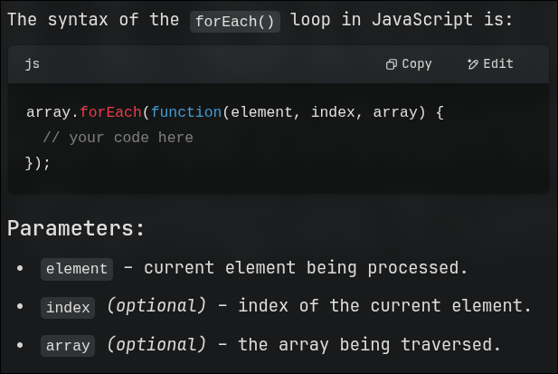

Var Rules, Loops,String
Variable Rules
- Can start with underscore or letters or a
$ symbol only
- Can contain symbols,letts,and number
- Reserved words cannot be used as variables
- Javascript is case sensitive
REPL
- R
- Read
- E
- Evaluate
- P
- Print
- L
- Loop
Loops
for in: iterators in objects
const obj={
name:"warlord",
age:"99"
};
for(const i in obj){ // "for in" is used for objects that show values in form of dictionaries
const val=obj[i]
console.log(i,val)
}
for(const i of obj.name){// "for of" is usually used for strings - arrays / iterables
console.log(i)
}
For each: loop is very similar to the other languages - for each loops
syntax:
object.forEach((value,index,object)=>
console.log(value,index,object);
})

Sample Function
- Function Statement [declaration]
- Can be hoisted
- Function Expression [assigning the return value to a variable]
- Assigned to a variable
- Can be anonymous
- Arrow Function
- Shorter syntax
- cannot use
thissupernew.target [ to check wether a target was called using new]
IIFE
Immediately Invoked Function Expression
- Creates a private scope
- Avoids polluting the global scope
ES
ES is JS
JS is the implementation and ES is the rulebook.
ES 6 = const, let , arrow functions , classes , modules [ 2015 ]
ES 7 -13 = async/await , optional chaining. [ 2016+ ]
Parameters
Positional Parameters
function makeLunch(main,side,drinks){}
Named Parameters
function makeLunch(opts){
const {main,side,drinks}=opts // naming those parameters
}
makeLunch({main:"🍞",side:"🥭",drinks:"🍷"}) // passing those arguments
Always remember that while defining the function they are called as parameters
and while calling the function they are called as Arguments
Rest Parameters
function makeLunch(...args){
}
makeLunch('🍇','🍈','🍉','🍊','🍌','🍍')
Arrow functions
const makeWine=(qty)=>{
return '🍷'.repeat(qty);
}
if its only one line - there is no need of the return keyword
const makeWine=(qty)=> '🍷'.repeat(qty)
Pure Functions
let x=2;
const impure =() =>{
x++;
return x**2;
}
const pure =(x) =>{
x++;
return x**2;
}
First-Class function
Where a function uses another function as its parameter
for ex: call-back function.
let haveFun=()=>console.log("Having Fun");
setTimeout(haveFun,500);
function tell(name,time){
console.log(`hello ${name}`)
console.log(`hope master [${name}] is doing well!`)
console.log(`its ${time} right now`)
}
const now=new Date();
const curtime=`${now.getHours()}:${now.getMinutes()}:${now.getSeconds()}`;
tell("warlord",curtime)
for of: iterators in arrays
Strings
let a="warlord"
console.log(a);
console.log(a[0]);
console.log(a[1]);
console.log(a[2]);
console.log(a[3]);
console.log(a[4]);
console.log(a[5]);
console.log(a[6]);
console.log(a.length); // 7
console.log(a.toUpperCase()); // WARLORD
console.log(a.toLowerCase()); // warlord
console.log(a.slice(1,5)); // prints from 1 to 5 - arlor
console.log(a.slice(3)); // prints from 3 to end - lord
console.log(a.replace("war","speed")); // speedlord
console.log(a.concat("088")); //warlord088
console.log(a.charAt(3)); // l
console.log(a.indexOf("war")) // 0
console.log(a); // warlord
// refer 'primitives' under 'basics' to know about `shift` and `unshift` string method - shift - pop from start , unshift - push in the start
let number=[1,2,3,4,5]
console.log(number.splice(1,3)); // 2,3,4 are REMOVED - now number=[1,5]
console.log(number.splice(1,3,222,333)); // 2,3,4 are removed and specified number [222,333] are ADDED
// SLICE doesn't modify the original array - just works on the shallow copy .
// used for copying without changes
// SPLICE modified the original array - can remove replace and add elements .
// used for editing in place
console.log(number)// [ 1 , 2 , 3 , 4 , 5 ]
console.log(number.toString()) // 1,2,3,4,5 -- again prints a shallow copy
// if you want to convert back to array in order to perform function like - MAP FILTER REDUCE
// do number = number.split(",")
console.log(Array.from(number))
console.log(number.join(" and ")) // 1 and 2 and 3 and 4 and 5
let b="flashbang";
console.log(a+" uses "+b);
//or
console.log(`${a} used ${b}`);
// we can also have stuff like double quotes in side the backticks like --
console.log(`"${a}" uses "${b}"`);
console.log("\""+a+"\" uses \""+b+"\"");
Map-Filter-Reduce
Code for Map
let arr=[1,2,3,4,5]
let newarr=arr.map((e,value,array)=>{ // value and array are not necessary here
return e**2
})
console.log(newarr)
// could also be written in short hand like -
let newArr=arr.map(e=>{
return e**2;
})
Code for Filter
let arr=[1,2,3,4,5]
let newarr=arr.map(e=>{
return e**2
})
console.log(newarr)
const greaterThanSeven = (e)=>{
if(e>7){
return true
}
return false
}
newarr.filter(greaterThanSeven)
This is different from map since for map it performs a custom function.
But for filter - it looks only for a boolean output - on truthy it keeps that particular value , upon falsy it removes that value.
It does not change the array values, Map have the power to do so
Code for reduce
This acts on the first two elements - performs the function and stores the returned value as the first element
Then considers that element and the element after that to perform the same function and stores it as 2nd / 1st element [ I will confirm this ]
Keeps repeating till the end of the array .
let arr=[1,2,3,4,5,6]
const red=(a,b)=>{
return a*b;
}
console.log(arr.reduce(red))
DOM & BOM